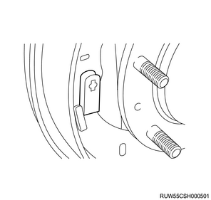
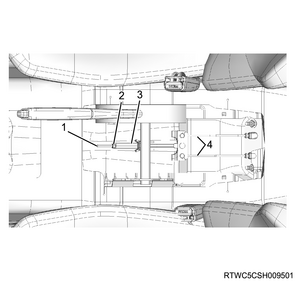

Parking brake cable (drum brake) installation (All models)
1. Parking brake cable installation
1. Apply the grease to the parking brake cable.
Note
- Apply multi-purpose grease to the connecting sections of the brake cable T-end and the equalizer.
2. Install the parking brake cable to the back plate.
Note
- Place the inner cable into the hole of the back plate, and then install the outer cable case and cap to the backplate.
- Install the end of the inner cable to the parking brake lever.
3. Install the parking brake cable to the bracket.
Note
- The following applies to 2WD (except for high ride suspension).
- Install the parking brake cable to the leaf spring bracket.
Tightening torque： 25 N・m { 2.5 kgf・m / 18 lb・ft } Nut
4. Install the parking brake cable to the bracket.
Note
- The following applies to 2WD (high ride suspension) and 4WD.
- Install the parking brake cable to the leaf spring bracket.
Tightening torque： 25 N・m { 2.5 kgf・m / 18 lb・ft } Bolt
5. Install the parking brake cable bracket to the frame.
Tightening torque： 6.5 N・m { 0.7 kgf・m / 58 lb・in } Bolt
6. Install the parking brake cable to the parking brake lever.
Note
- Install the T-end of the parking brake cable to the front parking brake cable equalizer.
- Install the parking brake cable retainer using a nut.
Tightening torque： 25 N・m { 2.5 kgf・m / 18 lb・ft }
2. Adjust lever spring installation
1. Install the adjust lever spring to the parking lever.
2. Install the adjust lever spring to the adjust lever.
3. Brake shoe assembly installation
1. Install the brake shoe assembly to the back plate.
Note
- Apply grease to the brake shoe fittings and sliding section of the back plate.

- Back plate sliding section
- Brake shoe fitting section
Caution
- Always use a new shoe holder pin and spring.
- Be careful not to damage the wheel cylinder dust cover.
- Be careful as the wheel cylinder piston may shoot out.
4. Spring installation
1. Install the spring to the brake shoe.
5. Shoe holder pin installation
1. Install the shoe holder pin to the brake shoe.
2. Install the spring to the shoe holder pin.

6. Brake drum installation
1. Install the brake drum to the brake assembly.
Note
- If the wheel cylinder is removed, bleeding air from the brake system is necessary.
- Depress the brake pedal 10 times to confirm that there is no stroke variation.
- Adjust the lining clearance.
7. Disc wheel installation
1. Install the disc wheel to vehicle.
Note
- Install the wheel nuts in the numbered order.
Tightening torque: 120 N⋅m {12.0 kgf⋅m/87 lb⋅ft}

8. Parking brake lever assembly adjustment
Note
- All of the brakes are automatic adjustment types.
- Automatic adjustment is possible by repeatedly depressing the brake pedal.
- After the brake pedal has been depressed and released, a clicking sound can be heard from the rear brake auto adjuster.
- Adjust using the following procedure after overhauling the rear brake assembly or replacing the parking brake cable.
- Perform procedure 5 if only installing or removing but not replacing the parking brake cable.
1. Release the parking brake lever.
Note
- Move to the position where it is completely released.
2. Loosen the adjust nut using a wrench.
3. Operate the brake pedal.
Note
- Repeatedly depress and release the brake pedal until a clicking sound can no longer be heard from the auto adjuster.
- If the clearance between the brake drum inner diameter and brake shoe is adjusted to 0.5 mm {0.020 in}, the number of times depressing the brake pedal can be reduced.
4. Remove the brake drum from the brake assembly.
Note
- Measure the clearance between the brake drum and brake shoe.
Lining clearance： 0.4 mm { 0.016 in }
Note
- Readjust if outside the specified range.
- After adjusting the lining clearance, adjust the parking brake lever.
5. Adjust the parking brake lever.
Note
- Turn to adjust the adjust nut so that the parking brake lever is pulled up 6 to 9 notches when the lever is pulled up with a force of 294 N {30 kg/66 lb}.
Caution
- Take care not to allow brake drag.

- Adjust bolt
- Adjust nut
- Spacer
- Parking brake cable
Note
- Remove the ashtray and adjust.

- Ashtray